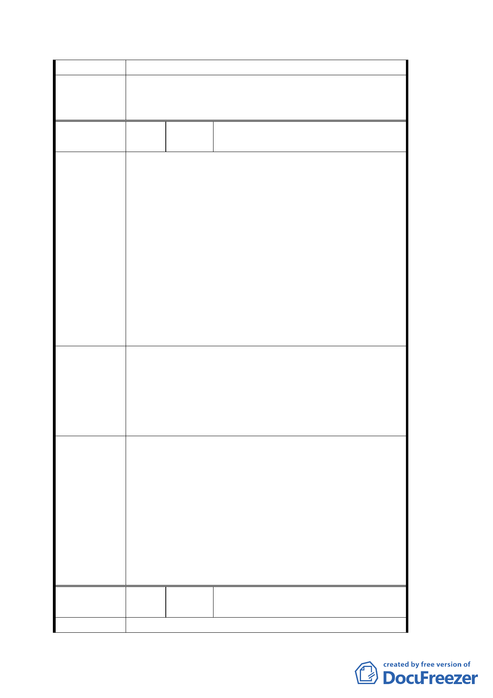

人穿越道與此徒步區合併即可。
同意捷運局提案，徵收內湖區康寧段三小段一八○地
委員會決議 號土地，供設置內湖站第二出入口及其相關設施，唯
請捷運局對鄰近建物安全應予以考量，納入設計參考。
編
號６
陳情人
永泰大廈管委會 （台北市內湖區成
功路四段 137-155 號）
1. 捷運內湖 B6 車站被西移 28.8 公尺，影響本社區住
戶權益。
2. 捷運內湖線為我內湖地區民眾引頸企盼十餘年的
重要交通建設，內湖車站又是內湖沿線人口最多，
德安商圈最繁華最熱鬧的車站，將來美國在台協會
遷移內湖後，每天利用捷運通勤、洽公人士將以萬
陳 情 理 由 計；將來我清白里民眾進出車站都要跨越馬路，勢
必影響安全及便利，若僅因為少數地主反對就輕率
擱置第二出口的設置，是非常不當的做法。
3. 為改善捷運內湖站 B6 出口住商環境，更新站區附
近之市容觀瞻、公共安全、停車空間，藉以發揮商
群聚集、活絡經濟並提升住商環境品質，以達成捷
運商圈共榮共享的最大效果。
1. 懇請恢復原計畫。
2. 請准將本里成功路四段 167 巷距成功路間約 30 公
建議辦法
尺之巷道範圍，比照慶城街做法，規劃為「捷運出
口人行徒步區」。
3. 建請於捷運興建規劃本區土地使用分區時，將內湖
車站方圓 200 公尺內之土地變更為商業用地。
1. 同意捷運局提案，徵收內湖區康寧段三小段一八○
地號土地，供設置內湖站第二出入口及其相關設
施。為符合捷運兩側禁限建辦法之規定，故將站體
西移 28.8 公尺，惟仍位於道路上方，並未使用陳
委員會決議
2.
情人土地。
建議內容非屬都市計劃範疇，留供將來捷運站規劃
時參考。
3. 成功路兩側已屬商業區（商三、商三特），有關車
站方圓 200 公尺內之土地變更為商業用地，宜留供
地區通盤檢討時辦理。
編
號
７
陳情人
郭家凰 先生等三人（台北市內湖區
民權東路六段 190 巷 35 弄 23 號）
陳 情 理 由 陳情位置：內湖區康寧段三小段 180 地號
第 4 頁，共 9 頁